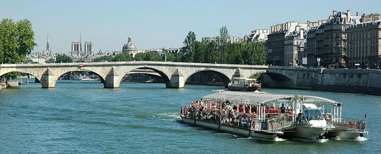

Paris is famous for its landmarks like the Eiffel Tower, but there are also many other landmarks that are world renowned like the Champs-Elysees for its shopping, fashion and culture, along with its history, you will never be without somewhere to go or something to do in Paris.

The Seine (French: La Seine, pronounced: [la sɛn]) is a major river and commercial waterway within the regions of the Île-de-France and Haute-Normandie in France. It is 776 km (486 miles) long, rising at Saint-Seine near Dijon in center-eastern France in the Langres plateau, flowing through Paris and into the English Channel at Le Havre. It is navigable by ocean-going vessels as far as Rouen, 120 km (75 miles) from the sea. Over sixty percent of its length, as far as Burgundy, is negotiable by commercial riverboats and nearly its whole length is available for recreational boating: excursion boats offer sightseeing tours of the Rive Droite and Rive Gauche within the city of Paris.
There are 37 bridges within Paris and dozens more spanning the river outside the city. Examples in Paris include the Pont Louis-Philippe and Pont Neuf, the latter of which dates back to 1607. Outside the city, examples include the Pont de Normandie, one of the longest cable-stayed bridges in the world, which links Le Havre to Honfleur.
The name "Seine" comes from the Latin Sequana, a Latinisation of the Gaulish (Celtic) Sicauna, which is argued to mean "sacred river". Some have argued that Sicauna is cognate to the name of Saône River, though an argued relationship to the River Shannon in Ireland is unlikely, given the very different forms of the two; Gaelic an tSiona, dative Sionainn is rather from Prehistoric Irish *Sinona. Another proposal has it that Sequana is the Latin version of Gaulish Issicauna Lower-Icauna, which would be the diminutive of Icauna, which was the Gaulish name of the Yonne River. Some believe the ancient Gauls considered the Seine to be a tributary of the Yonne, which indeed presents a greater average discharge than the Seine (the river flowing through Paris would be called Yonne if the standard rules of geography were applied).
Some identify the river Sikanos, origin (according to Thucydides) of the Sicanoi of Sikelia (Sicily), with the river Sequana (Seine).}}
According to Pierre-Yves Lambert, a specialist of the Gaulish language, Sequana retains QV , that is unusual in Gaulish, which is normally a P-Celtic language, but he compares with the month name EQVOS, read on the Coligny Calendar. The name of the Gaulish tribe Sequani derives from it.
The digram QV of Sequana could recover a whole syllable, that is to say [se-ku-wa-na], like ucuetis [u-ku-we-tis], but its meaning remains unknown.